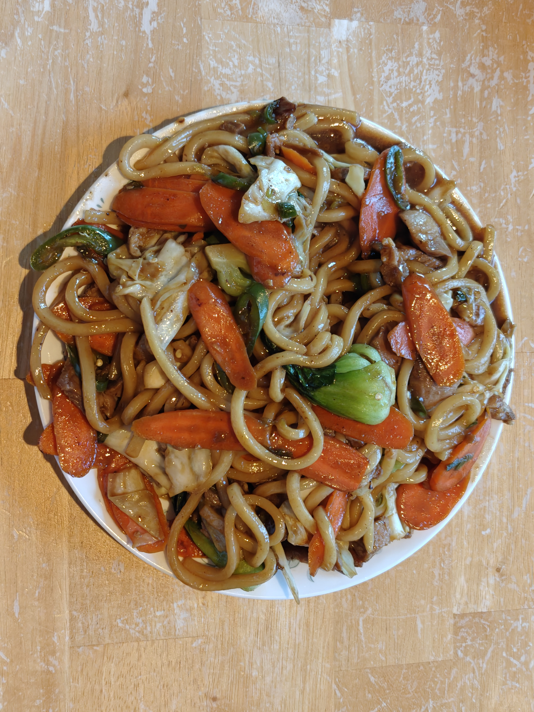

Yaki-Udon (Stir-fried Udon Noodles)

Description
Savory stir-fried udon noodles.
Ingredients
- frozen udon noodles
- chunk of pork shoulder (sub with other protein)
- marinade: soy sauce, white pepper, cornstarch, shaoxing wine, cooking oil, mirin
- vegetables to preference: cabbage, carrot, onion, bok choy, peppers, etc.
- green onion
- seasonings
- soy sauce
- dark soy sauce (for color)
- oyster sauce
- garlic (powder or fresh)
- white pepper
- dashi
- mirin
- salt
- red pepper flakes/powder (for spice, to taste)
- cut ingredients into thinly siced wide strips
- put sliced pork in bowl and marinate for ~5+ min to tenderize
- start boiling a pot of water for udon
- on rolling boil, put udon in, take out as soon as it separates (~1 min)
- heat oil in pan, stir fry vegetables on high heat in batches
- preheat oil, stir fry onions in pot until golden brown and well softened
- heat oil in pan, stir fry meat on high heat until cooked
- turn heat to low-med, put vegetables back in pan, put udon in pan, throw in seasonings to taste
- mix well and serve
Back